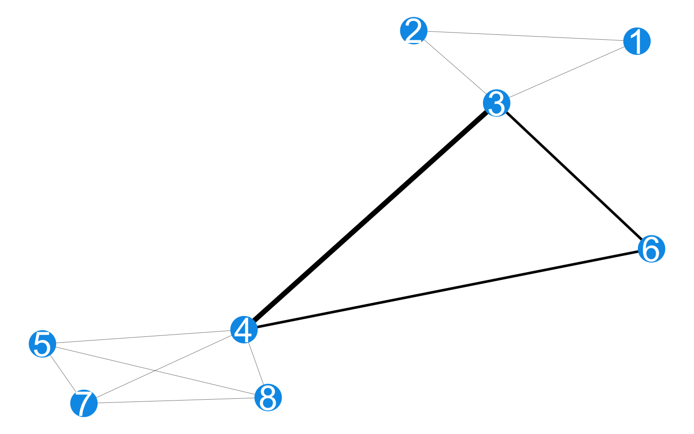

start_date <- targets::tar_read(data_bipartite_graph_collected) %>% data.frame() %>% pull(createdAt) %>% min(na.rm= TRUE)
end_date <- targets::tar_read(data_bipartite_graph_collected) %>% data.frame() %>% pull(createdAt) %>% max(na.rm= TRUE)Methods
Data Collection
Under the Rapid Epidemiologic Study of Prevalence, Networks, and Demographics of Monkeypox Infection (RESPND-MI), we implemented MPX NYC - a brief, anonymous, online survey among transgender people and gay, bisexual, and other men who have sex with men. Data were collected in New York city from 30 August to 15 November 2022.
RESPND-MI Community Forum and Investigator team
At the outset of the project we prioritized rapid consultation with a wide variety of stakeholders (see @roth2023global) with the goals of: validating our understanding of the unfolding health threat; understanding how planned study and communication activities fit in a broader response to mpox; gathering feedback on our plans; and developing an audience for the study results.
Though, much of the initial engagement occurred through one-on-one meetings, the RESPND-MI team host an open meeting on 27 June 2022, inviting city and state government officials, local LGBTQ+ organizations with health or advocacy programs, individual activists, researchers, leaders in the nightlife/entertainment industry of New York, and queer and trans people in general. Participants requested a weekly call to enable collective learning and discussion about the outbreak. We named the call the RESPND-MI LGBTQ+ Community Forum, opened it to the public, and advertised it on our website, social media, and through the press. About 80 individuals participated in the community forum the initial meeting to the final call at the end of August 2022.
The Community Forum became a mechanism for coordinating action across organizations and allowed the development of a local, comprehensive, collective response to mpox. Members of the Community Forum collaborated to develop and share resources such as vaccine locators, took political action through policy briefs, and strengthened the programmatic response by creating health communications materials, etc. (see @roth2023global).
The Community Forum strongly shaped study plans, including the recruitment campaign, the design of a novel spatial data collection tool, and the development of our study questionnaire. Sustained engagement in this group led to several concrete improvements in research approach: for example, a criticism of the initial communication approach was that it centered cisgender men to the exclusion of transgender women and transgender men. This was not warranted given that there was no information about the impact of mpox on these communities, and given that transgender people and cisgender people are part of the same social and sexual networks which woudl likely be affected by mpox. We responded by inviting the participant who raised that issue to join the study team, and over time attempted to continually improve gender related language and iconography in the project through discussion among investigators.
The investigator team consisted of X cisgender black gay men, two black transgender women, 1 asian cisgender gay man, one latinx cisgender gay man, X white cisgender gay men. Among them, X hold PhDs in epidemiology and related fields, X had experience working in an LGBT health services organization, X had experience in grassroots organizing, 1 had experience developing global health program guidance for LGBT people. It grew of the life of the project since anybody who did study-related work, or contributed to discussions about study design was invited to be a RESPND-MI investigator.
MPX NYC marketing and communication
To maximize the speed of recruitment, we invested in a bilingual, culturally competent communication campaign in collaboration with a marketing agency. The brief was to create a name and marketing concept that convey scientific rigor, build trust with the community, and stand out in a crowded online marketplace (see Figure 1). As a starting point, the RESPND-MI team suggested a campaign that playfully uses emojis that have sexual connotations in queer and trans communities, and that integrates LGBT social media influencers as a communication channel.

Two campaign names and four marketing concepts (see Figure 2) were developed by the marketing agency and presented to a meeting of the RESPND-MI Community Forum. The final concept and name were decided by consensus during that meeting.
Marketing materials were developed based on the concept. Materials included graphics, videos by queer influencers, and a style guide (including colors, icons, and fonts) for all public-facing materials of the MPX NYC study. We organized these materials into a “social media toolkit” and shared them through the study website to enable individuals and organizations to easily share them through their own social media accounts. We used these materials in advertisements placed through Grindr, Twitter, Instagram, and outdoor electronic billboards.

Novel spatial data collection tool
To encourage disclosure of sensitive information related to sex, health status, and physical location, we were careful not to collect information that could be used to identify participants once study data become available to external researchers. For instance, age was collected as an ordinal variable (using 10-year bands) rather than as an integer.
To collect information on important physical locations, we designed, tested, and implemented a novel online survey instrument which captures rich spatial data while protecting participant anonymity. It does this by coarsening the spatial data to the census tract level before it is transmitted from the participant’s device to the study database. Census tracts are non-overlapping spatial units that exhaustively partitions the United States into areas ranging from \(2500\) to \(8000\) in population size [@uscensus2022]. Along with standard question formats (multiple choice, single choice, text field etc.) the instrument included what we term the location-input question.
The location-input question, elicits all places of a particular type from the participant. Like the Google maps interface, the location-input question displays a map with detailed geographic information including place names, roads, and neighborhood names, and includes a search bar (see Figure 3). This interface was chosen to avoid eliciting addresses or zip-codes for places other than participants’ residence, which are more difficult to remember than the name of a location, its approximate address, cross streets, neighborhood, or any of the parameters admitted by the google maps search engine. We did this to maximize data completeness.
Participants enter elicited places by tapping on the displayed map. For each tap, a pop-up window with a series of questions about that place is triggered, and a marker is displayed. The spatial and response data are saved as part of the participant’s survey record.
The front end of the MPX NYC survey instrument was developed as a single-page web application using the React/NextJS framework [@nextjsd2024] with visual design based on the MPX NYC style guide. The Google Maps API [@google2024] provides the displayed map and returns longitude-latitude coordinates for each marker placed on the map. The Federal Communications Commission API [@federal] receives longitude-latitude coordinates and transforms them into census tract identifiers. The back end was a custom-built neo4j graph database [@neo4j2024].

Inclusion and Exclusion Criteria
Potential participants were included in the study if they consented to participate, were over 18 years of age, identified as transgender, gay, bisexual, or as men who have sex with other men, and were in New York City in the four weeks preceding their participation. Potential participants were excluded if they were younger than 18 years of age or they withdrew consent.
Translation
All study materials were professionally translated from English to Spanish. The translation was reviewed by six professionals in health-related fields whose primary language is Spanish.
Ethical Review
The study was reviewed and approved by the T.H. Chan School of Public Health Institutional Review Board (IRB22-0761).
Measures
Participant characteristics
The brief (5 minute) questionnaire was implemented in English and Spanish. It measured participant demographics; community district of primary residence; social and sexual connections to queer or transgender community; health status; utilization of health services; STI-related symptoms, and mpox vaccination status (See Table 1).
Gender identity
Gender identity was measured using a two-step approach: first, we solicited the participant’s current gender (man, woman, trans man, trans woman, non-binary, other), and then sex assigned at birth (male, female, other). Those whose gender identity and sex assigned at birth were not concordant were categorized as transgender. We used current gender to further categorize transgender people into men and women.
Race-gender
Race was measured using a multiple selection question (white, black, latino/a/x, asian, pacific islander, other). We combined gender identity and race to form a gender-race variable, collapsing small cells across racial groups and into gender groups (white cisgender man, latinx cisgender man, black cisgender man, other cisgender man, non-binary person, transgender man, transgender woman, cisgender woman, another demographic).
Contact venue characteristics
All participants were asked whether they had physical and sexual contact in a setting with two or more other people in the four weeks preceding the survey. We refer to this as “group contact” below. Those who answered yes were asked to enter the locations of these settings, which we refer to as “contact venues” below.
Among participants who reported group contact (i.e. physical or sexual contact in a group setting in the preceding 4 weeks) we solicited the census tracts of the places at which the contact happened, as well as the venue type (dance party, sex party, darkroom, sport game, concert, theatre/show, private residence, sex club, bathhouse, park, something else) and whether they had sexual contact. We refer to these as “contact venues”.
Community district
In this analysis, the unit of spatial analysis is the community district. Community districts are spatial units that divide New York City into regions [@nycopendata2022] which are nested by the five boroughs of New York City, and which in turn nest census tracts. All census tract identifiers were converted to community district identifiers.
Distance from home
We constructed an approximate measure of the distance between participant residence and contact venues by categorizing the venues into those that are: in the same community district as the residence; in a different community district but the same borough; or in a different borough. We refer to this measure as distance from home.
Participant network characteristics
For a pathogen to be transmitted between two people, they have to make contact with one another in a shared physical context. We examined the patterning of shared physical context among participants using the MPX NYC participant network. In this network, survey participants are represented as nodes. A weighted edge between two individuals indicates that they each have at least one residence or contact venue in a common community district. The weight is given by the count of community districts the pair share in this way. The more community districts they share, the more likely it is that they would transmit a pathogen if one member of the pair was infected and the other was not.
Of interest are the overall connectedness of the network and the pattern of connection across different subgroups. The better connected a network is, the more rapidly a pathogen could disseminate across nodes. Patterns of mixing across subgroups shape group-specific rates of infection over time.
Proportion in largest connected component
We measure connectedness using the proportion of nodes in the largest connected component (LCC) of the MPX NYC participant network. A connected component of a network is a subset of nodes such that each node in the subset is reachable from any other node in the subset, and such that there are no nodes outside the subset which are reachable from a node inside it. By reachable, we mean possible to reach by tracing a path from one node to another over existing network ties. We consider a network with a larger LCC to be better connected than a network with a smaller LCC.
Spatial mixing coefficient
We measure patterns of mixing using the spatial mixing coefficient of subgroup \(a\) for subgroup \(b\), which is defined as the spatial mixing ratio minus one. This measure is zero when contact venues and residences for a given subgroup are distributed in space independently of another; positive if members of the former subgroup tend to share community districts with those of the latter; and negative if they tend to not share community districts.
The spatial mixing ratio is defined as the average spatial preference of subgroup \(a\) for subgroup \(b\) divided by the prevalence of subgroup \(b\) where, for a given individual participant, spatial preference for subgroup \(b\) is given by the sum of the edge weights for nodes who are members of subgroup \(b\) divided by the total sum of edge weights. The average spatial preference of subgroup \(a\) for subgroup \(b\) is given by the average of spatial preference values for subgroup \(b\) among individuals in subgroup \(a\).
The spatial mixing coefficient is related to ideas in the social network analysis literature. The coefficient of a given subgroup for itself indicates homophily when it is positive, and heterophily when it is negative. In the case of heterophily, it shows which other subgroups members of a given subgroup tend to be connected with. The measure also relates to the literature on compartmental infectious disease models (SIR models). When it is zero, the spatial mixing coefficient indicates random mixing in the population.
Community district network characteristics
To understand how community districts represented in study data are connected through participants who have residences and contact venues across them, we constructed the MPX NYC community district network. This is a network with community districts as nodes. A weighted tie between two nodes indicates that the two community districts both have at least one MPX NYX participant who has a residence or community district in both places. The weight is given by the count of such individuals. Of interest is the influence each community district has in city-wide outbreak dynamics.
Community district spatial reach
We measure the influence of each community district using community district spatial reach. For a given community district, this measure is defined as the sum of edge weights for edges connecting that community district to others. It quantifies the level of exchange of individuals between a particular community district and others. number of individuals that a particular community district shares with others.
Statistical Analysis
Descriptive statistics
We tabulated participant characteristics against group contact, and visualized the distribution of sexual orientation categories across levels of the race-gender variable. We also tabulated contact venue characteristics against sexual contact, and further visualized venue type against distance from home in addition to sexual contact.
To understand how participants move across community districts from home to contact places, we cross-tabulated home community district (the community district of the participants’ residence) against contact place community district and visualized the resulting table. To identify community districts that tend to receive more participants from residences in outside community districts, and those which tend to send participants, we subtracted the proportion of residences in each community district from the proportion of contact venues. The result of this calculation is shown as a bar graph.
Finally, we calculated the spatial mixing coefficient across groups defined by age, sexual orientation, and race-gender to understand how individuals in subgroups defined by these variables interact in space.
Responding to an outbreak
To illustrate how the pattern of interaction among queer and trans people should inform early responses to novel infectious diseases, we examined the impact of a simplified, spatially-targeted intervention to immunize the population represented by the MPX NYC participants against a novel pathogen. We examine the impact of two different intervention strategies on two population outcome measures of interest
Intervention strategies
In this hypothetical intervention, community districts are ordered by priority and are immunized one at a time, beginning with the highest priority community district. We assume that to immunize a community district is to immunize each individual who has a contact venue or residence in that community district. We assume that once a person is immunized, they are unable to acquire or transmit the pathogen, and we assume that everyone can only be immunized once. We assessed two strategies for prioritizing community districts: the contact-neutralizing strategy and the movement-neutralizing strategy.
In the contact-neutralizing strategy, we rank districts according to the number of contact venues and residences they contain (counting only the residences of participants who reported group contact, and who are not yet immunized). This strategy prioritizes community districts with a high amount of sexual or physical contact for immunization. It attempts to immunize as many people in as few community districts as possible.
In the movement-neutralizing strategy, we rank community districts by their spatial centrality. This strategy prioritizes community districts with a high level of connection to other community districts for immunization. It attempts to immunize the community districts that are potential hubs for the dissemination of the pathogen across the city early to geographically contain the outbreak.
Intervention outcomes
For each community district immunized, we updated the MPX NYC participant network by removing nodes that represent immunized individuals. We then calculated the two outcomes each time: spatial efficiency, and spatial network impact.
Spatial efficiency is defined as the total count of immunized individuals divided by the count of immunized community districts. Spatial network impact is defined as the proportion of individuals included in the largest connected component of the MPX NYC participant network.
To illustrate differences in spatial efficiency across intervention strategies, we visualized the number of community districts it would take to immunize 33% of the population, and 66% of the population respectively. To illustrate differences in spatial network impact across intervention strategies, for each additional community district immunized, we plotted the proportions of individuals who are immunized, unimmunized and in the largest connected component, and unimmunized but outside of the largest connected component, respectively.
Results
Participants
The MPX NYC survey was open from 30 August to 15 November, 2022, but recruited \(70\%\) participants in two 48 hour periods: half were recruited from 30 to 31 Aug, and another 20% from 10 to 11 September (see Figure 4). Over these periods, the MPX NYC recruitment advertisements were shown to users of Grindr in New York City upon logging on to the app.
MPX NYC participants are demographically diverse. Over 50% of participants were between the ages of 18-34 at the time of the survey. Two fifths were white cisgender men, about 15% were latinx cisgender men, and 10% were black cisgender men. About 5% of participants were transgender (with slightly over half being transgender men). Non-binary individuals comprised 7% of participants. Two-thirds of participants identified as gay, 14% as bisexual, and 12% as queer. Just under half of participants resided in the borough of Manhattan, and one third in Brooklyn.
In terms of health status and health services, one in ten participants reported living with HIV - the overwhelming majority were virally suppressed. In addition, about 16% reported at least one STI symptom. Two out of five participants were on PrEP at the time they took the survey. Two-thirds had received the MPOX vaccine, though only 8% had received MPOX testing.
targets::tar_read(data_bipartite_graph_collected) %>%
tidygraph::activate(nodes) %>%
data.frame() %>%
dplyr::filter(type) %>%
dplyr::select(
"age", "race", "genderId", "demo_group", "sexOrientation", "borough" , "channel", "groupSex","countFriendsCut", "countPhysicalCut",
"hivStatus", "hivSuppressed", "NumSymptomsCut", "hivPrep", "monkeypoxTest", "countSexCut", "travelTimeCut", "createdAtCut", "monkeypoxVaccine"
) %>%
gtsummary::tbl_summary(by = groupSex) %>%
gtsummary::add_overall(last = TRUE) %>%
gtsummary::modify_spanning_header(c("stat_1", "stat_2", "stat_0") ~ "**Physical or sexual contact in group setting in past 4 weeks**") %>%
gtsummary::add_p() %>%
gtsummary::modify_header(label ~ "**Variable**") %>%
gtsummary::bold_labels() %>%
gtsummary::as_gt() %>%
gt::tab_source_note(gt::md("*Data source: MPX NYC 2022*")) | Variable | Physical or sexual contact in group setting in past 4 weeks | p-value2 | ||
|---|---|---|---|---|
| Yes N = 5301 |
No N = 7741 |
Overall N = 1,3041 |
||
| Age | <0.001 | |||
| 18-24 | 92 (17%) | 103 (13%) | 195 (15%) | |
| 25-34 | 234 (44%) | 304 (39%) | 538 (41%) | |
| 35-44 | 135 (25%) | 190 (25%) | 325 (25%) | |
| 45-54 | 48 (9.1%) | 97 (13%) | 145 (11%) | |
| 55+ | 21 (4.0%) | 80 (10%) | 101 (7.7%) | |
| Race | 0.5 | |||
| White | 279 (53%) | 416 (54%) | 695 (53%) | |
| Latinx | 103 (19%) | 128 (17%) | 231 (18%) | |
| Black | 60 (11%) | 96 (12%) | 156 (12%) | |
| Asian | 32 (6.0%) | 52 (6.7%) | 84 (6.5%) | |
| Multi Racial | 37 (7.0%) | 42 (5.4%) | 79 (6.1%) | |
| Another Group | 19 (3.6%) | 38 (4.9%) | 57 (4.4%) | |
| Unknown | 0 | 2 | 2 | |
| Gender identity | 0.4 | |||
| Cisgender Man | 427 (81%) | 630 (81%) | 1,057 (81%) | |
| Non Binary | 39 (7.4%) | 57 (7.4%) | 96 (7.4%) | |
| Transgender Man | 17 (3.2%) | 17 (2.2%) | 34 (2.6%) | |
| Transgender Woman | 14 (2.7%) | 15 (1.9%) | 29 (2.2%) | |
| Cisgender Woman | 19 (3.6%) | 43 (5.6%) | 62 (4.8%) | |
| Another Demographic | 12 (2.3%) | 12 (1.6%) | 24 (1.8%) | |
| Unknown | 2 | 0 | 2 | |
| Race x gender | 0.5 | |||
| White Cisgender Man | 218 (41%) | 334 (43%) | 552 (42%) | |
| Latinx Cisgender Man | 88 (17%) | 110 (14%) | 198 (15%) | |
| Black Cisgender Man | 50 (9.5%) | 81 (10%) | 131 (10%) | |
| Other Cisgender Man | 71 (13%) | 105 (14%) | 176 (14%) | |
| Non-Binary Person | 39 (7.4%) | 57 (7.4%) | 96 (7.4%) | |
| Transgender Man | 17 (3.2%) | 17 (2.2%) | 34 (2.6%) | |
| Transgender Woman | 14 (2.7%) | 15 (1.9%) | 29 (2.2%) | |
| Cisgender Woman | 19 (3.6%) | 43 (5.6%) | 62 (4.8%) | |
| Another Demographic | 12 (2.3%) | 12 (1.6%) | 24 (1.8%) | |
| Unknown | 2 | 0 | 2 | |
| Sexual Orientation | 0.010 | |||
| Gay | 362 (68%) | 498 (64%) | 860 (66%) | |
| Bisexual | 67 (13%) | 119 (15%) | 186 (14%) | |
| Straight | 14 (2.6%) | 50 (6.5%) | 64 (4.9%) | |
| Queer | 71 (13%) | 88 (11%) | 159 (12%) | |
| Another Orientation | 16 (3.0%) | 19 (2.5%) | 35 (2.7%) | |
| Borough | 0.019 | |||
| Bronx | 31 (5.8%) | 66 (8.5%) | 97 (7.4%) | |
| Brooklyn | 176 (33%) | 258 (33%) | 434 (33%) | |
| Manhattan | 259 (49%) | 320 (41%) | 579 (44%) | |
| Queens | 58 (11%) | 119 (15%) | 177 (14%) | |
| Staten Island | 6 (1.1%) | 11 (1.4%) | 17 (1.3%) | |
| Recruitment channel | 0.002 | |||
| Grindr | 262 (49%) | 444 (57%) | 706 (54%) | |
| Partner toolkit | 60 (11%) | 82 (11%) | 142 (11%) | |
| 47 (8.9%) | 65 (8.4%) | 112 (8.6%) | ||
| 19 (3.6%) | 43 (5.6%) | 62 (4.8%) | ||
| Unknown | 142 (27%) | 140 (18%) | 282 (22%) | |
| Count of queer/trans friends | <0.001 | |||
| 0 | 64 (12%) | 155 (20%) | 219 (17%) | |
| 1-5 | 206 (39%) | 333 (43%) | 539 (41%) | |
| 6-10 | 136 (26%) | 167 (22%) | 303 (23%) | |
| 11-15 | 49 (9.2%) | 41 (5.3%) | 90 (6.9%) | |
| 16+ | 75 (14%) | 78 (10%) | 153 (12%) | |
| Count of physical contact partners | <0.001 | |||
| 0 | 98 (18%) | 301 (39%) | 399 (31%) | |
| 1 | 68 (13%) | 191 (25%) | 259 (20%) | |
| 2 | 66 (12%) | 105 (14%) | 171 (13%) | |
| 3 | 46 (8.7%) | 64 (8.3%) | 110 (8.4%) | |
| 4 | 47 (8.9%) | 32 (4.1%) | 79 (6.1%) | |
| 5+ | 205 (39%) | 81 (10%) | 286 (22%) | |
| HIV Status | 0.6 | |||
| Living with HIV | 60 (11%) | 81 (10%) | 141 (11%) | |
| Not living with HIV | 470 (89%) | 693 (90%) | 1,163 (89%) | |
| HIV viral suppression | 0.3 | |||
| Suppressed | 54 (90%) | 78 (95%) | 132 (93%) | |
| Not Suppressed | 6 (10%) | 4 (4.9%) | 10 (7.0%) | |
| Unknown | 470 | 692 | 1,162 | |
| Number STI Symptoms | <0.001 | |||
| 0 | 412 (78%) | 681 (88%) | 1,093 (84%) | |
| 1+ | 118 (22%) | 93 (12%) | 211 (16%) | |
| PrEP Use | <0.001 | |||
| Not on PrEP | 218 (46%) | 440 (63%) | 658 (57%) | |
| On PrEP | 252 (54%) | 253 (37%) | 505 (43%) | |
| Unknown | 60 | 81 | 141 | |
| MPOX Test | 0.001 | |||
| Tested | 58 (11%) | 47 (6.1%) | 105 (8.1%) | |
| Untested | 472 (89%) | 727 (94%) | 1,199 (92%) | |
| Count of sex partners | <0.001 | |||
| 0 | 48 (9.1%) | 272 (35%) | 320 (25%) | |
| 1 | 86 (16%) | 258 (33%) | 344 (26%) | |
| 2 | 96 (18%) | 110 (14%) | 206 (16%) | |
| 3 | 82 (15%) | 62 (8.0%) | 144 (11%) | |
| 4 | 62 (12%) | 29 (3.7%) | 91 (7.0%) | |
| 5+ | 156 (29%) | 43 (5.6%) | 199 (15%) | |
| Willing travel time for hooking up | <0.001 | |||
| 0-15 min | 121 (23%) | 262 (34%) | 383 (29%) | |
| 16-30 min | 221 (42%) | 270 (35%) | 491 (38%) | |
| 31-45 min | 71 (13%) | 88 (11%) | 159 (12%) | |
| 45+ min | 117 (22%) | 154 (20%) | 271 (21%) | |
| Recruitment date | 0.041 | |||
| 30-31 Aug 2022 | 239 (45%) | 372 (48%) | 611 (47%) | |
| 01-10 Sep 2022 | 110 (21%) | 118 (15%) | 228 (17%) | |
| 10-11 Sep 2022 | 98 (18%) | 171 (22%) | 269 (21%) | |
| 12 Sep - 31 Nov 2022 | 83 (16%) | 113 (15%) | 196 (15%) | |
| MPOX Vaccination | <0.001 | |||
| Vaccinated | 409 (77%) | 461 (60%) | 870 (67%) | |
| Unvaccinated | 121 (23%) | 313 (40%) | 434 (33%) | |
| Data source: MPX NYC 2022 | ||||
| 1 n (%) | ||||
| 2 Pearson’s Chi-squared test; Fisher’s exact test | ||||
This diversity of subgroups implies different strategies for communication, and possibly different health interventions. For instance, the sexual orientation of participants differed markedly by gender (see Figure 5). The vast majority of cisgender men identified as gay, with some identifying as bisexual. Transgender men, on the other hand, were most likely to identify as queer, followed by bisexual or gay. Transgender women tended to identify as straight, bisexual, or other sexual orientations. Cisgender women participants tended to be straight, followed by bisexual, followed by queer. For non-binary people, most identified as queer, followed by gay and bisexual.
make_table_freq2(sexOrientation, demo_group) %>%
plot_radar_grid() %>%
apply_style_radar_grid_plot()`summarise()` has grouped output by 'level', 'stratum_a'. You can override
using the `.groups` argument.
`summarise()` has grouped output by 'rep', 'level', 'stratum_a'. You can
override using the `.groups` argument.
`summarise()` has grouped output by 'stratum_a', 'stratum_b'. You can override
using the `.groups` argument.
MPX NYC participants were deeply connected to queer and trans communities in New York City. About two-thirds reported being in recent (preceding 4 weeks) contact with 1 - 10 queer or trans friends. Only 20% reported not being in contact. About half of the participants had between 1 and 3 recent serial sex partnerships with one fifth reporting four or more partners. About one third of participants reported spending 16-30 minutes when traveling to a hookup while a third spent more than 30 minutes. Almost one in four participants reported having recent physical (non-sexual) contact with 2 or more individuals at the same time, and one third reported having had no contact. [DOUBLE CHECK]
Among all MPX NYC participants, 40% (530) reported reported having had sex or physical contact with two or more people at the same time. These participants identified \(604\) venues at which they had contact. These contact venues are examined in the next section.
Participants who reported recent physical or sexual contact in a group setting (group contact) were slightly younger than those who did not. They were more likely to identify as gay and less likely to identify as straight. Surprisingly, they were less likely to have been recruited through a Grindr advertisement and more likely to have been recruited before the first Grindr pop-up advertisement on 30 August 2022.
These participants did not differ from the rest in terms of HIV status or HIV viral suppression, but they were more likely to have at least one STI symptom, and showed higher utilization of PrEP, mpox testing, and mpox vaccine. They were more closely connected with the queer and trans community, reporting more contact with friends, more physical contact partners and more sexual contact partners. They spent more time travelling to hookups than participants who had not had recent contact in a group setting.
Contact venues
Of the \(604\) locations at which participant had physical or sexual contact in a group setting (contact venues), about two out of five were private residences, and about a quarter were dance parties. More than half of the contact venues were in Manhattan, while less than a third were in the Brooklyn. A quarter of all contact venues were in the same community as the participant’s residence, a third were in a different borough, and the remainder were in the same borough as home, but a different community district.
#| fig-cap: "Participants in MPX NYC Study by Sex / Physical Contact in Congregate Setting in past 4 weeks"
#| label: fig-places-descriptives
targets::tar_read(data_bipartite_graph_collected) %>%
tidygraph::activate(edges) %>%
data.frame() %>%
dplyr::filter(!home) %>%
dplyr::select("placeSex", "placeType", "place_borough", "distanceFromHome") %>%
gtsummary::tbl_summary(by = placeSex) %>%
gtsummary::add_overall(last = TRUE) %>%
gtsummary::modify_spanning_header(c("stat_1", "stat_2", "stat_0") ~ "**Sexual contact at contact venue**") %>%
gtsummary::add_p() %>%
gtsummary::modify_header(label ~ "**Variable**") %>%
gtsummary::bold_labels() %>%
gtsummary::as_gt() %>%
gt::tab_source_note(gt::md("*Data source: MPX NYC 2022*")) | Variable | Sexual contact at contact venue | p-value2 | ||
|---|---|---|---|---|
| Did not have sex N = 2641 |
Had sex N = 3521 |
Overall N = 6161 |
||
| Place type | <0.001 | |||
| Concert/Theatre/Show | 63 (24%) | 4 (1.1%) | 67 (11%) | |
| Dance Party | 110 (42%) | 33 (9.4%) | 143 (23%) | |
| Dark Room/Sex Party | 10 (3.8%) | 52 (15%) | 62 (10%) | |
| Private Residence | 28 (11%) | 222 (63%) | 250 (41%) | |
| Something Else | 40 (15%) | 40 (11%) | 80 (13%) | |
| Sport Game | 13 (4.9%) | 1 (0.3%) | 14 (2.3%) | |
| Borough | 0.3 | |||
| Bronx | 6 (2.3%) | 18 (5.1%) | 24 (3.9%) | |
| Brooklyn | 84 (32%) | 96 (27%) | 180 (29%) | |
| Manhattan | 144 (55%) | 188 (53%) | 332 (54%) | |
| Queens | 29 (11%) | 48 (14%) | 77 (13%) | |
| Staten Island | 1 (0.4%) | 2 (0.6%) | 3 (0.5%) | |
| Distance from home | <0.001 | |||
| Same community as home | 42 (16%) | 144 (41%) | 186 (30%) | |
| Same borough as home | 116 (44%) | 114 (32%) | 230 (37%) | |
| Different borough from home | 106 (40%) | 94 (27%) | 200 (32%) | |
| Data source: MPX NYC 2022 | ||||
| 1 n (%) | ||||
| 2 Pearson’s Chi-squared test; Fisher’s exact test | ||||
Contact venues at which participants had sexual contact (rather than non-sexual physical contact) were overwhelmingly private residences whereas contact venues at which they had non-sexual physical contact were mostly dance parties (see Figure 6). The closer to home a location was, the more likely it was to be a private residence and the more likely it was the site of sexual contact. By contrast, the further from home a contact venue was, the more likely it was to be a dance party.
make_table_freq3(placeType, placeSex, distanceFromHome, person_analysis = FALSE) %>%
filter(!is.na(level)) %>%
plot_radar_stratified2() %>%
apply_style_radar_facet_plot()`summarise()` has grouped output by 'level', 'stratum_a'. You can override
using the `.groups` argument.
`summarise()` has grouped output by 'rep', 'level', 'stratum_a'. You can
override using the `.groups` argument.
`summarise()` has grouped output by 'stratum_a', 'stratum_b'. You can override
using the `.groups` argument.
`summarise()` has grouped output by 'stratum_a'. You can override using the
`.groups` argument.Warning in ggplot2::geom_text(aes(label = prop_label, x = level, y = proportion
+ : Ignoring unknown parameters: `face`Scale for y is already present.
Adding another scale for y, which will replace the existing scale.Warning: Removed 1 row containing missing values or values outside the scale range
(`geom_text()`).
Movement
Figure 7 shows the difference betweeen the proportion of primary residences in each community district and the proprotion of contact venues in each community district. It shows that within Brooklyn, Manhattan, and Queens, there is a small set of community districts which tend to be markedly over-represented among contact venues compared to their share of primary residences. These are BK01, MN05, and QN05, respectively.
make_table_home_vs_place_dbn() %>%
plot_home_vs_residence_dbn_bar() %>%
apply_style_home_vs_residence_dbn_bar_plot()`summarise()` has grouped output by 'from', 'to', 'from_borough'. You can
override using the `.groups` argument.
`summarise()` has grouped output by 'to'. You can override using the `.groups`
argument.
`summarise()` has grouped output by 'from', 'to', 'from_borough'. You can
override using the `.groups` argument.
`summarise()` has grouped output by 'from'. You can override using the
`.groups` argument.Warning: Using `size` aesthetic for lines was deprecated in ggplot2 3.4.0.
ℹ Please use `linewidth` instead.Warning: The `size` argument of `element_line()` is deprecated as of ggplot2 3.4.0.
ℹ Please use the `linewidth` argument instead.Warning: No shared levels found between `names(values)` of the manual scale and the
data's alpha values.
Figure 8 maps each contact venue’s community district (x-axis) against the participant’s home community district (y-axis). The size of the dot is proportional to the total count of contact venues with the given home and contact venue community district. The color of the dot represents the borough of the contact venue.
The dots on the diagonal line from top left to bottom right, show prominently, indicating that a sizeable proportion of movement happens within community districts. The figure also shows four prominent clusters - the cluster at the top left (in pink) shows significant movement between home and contact venues within Brooklyn and the cluster towards the middle of the plot (in purple) shows significant movement within Manhattan. The clusters at the top center and bottom left show significant movement from Brooklyn to Manhattan and from Manhattan to Brooklyn, respectively.
make_table_movement_travel() %>%
plot_matrix_movement() %>%
apply_style_matrix_movement() `summarise()` has grouped output by 'from', 'to', 'from_borough'. You can
override using the `.groups` argument.
Scale for x is already present. Adding another scale for x, which will replace
the existing scale.
Scale for y is already present. Adding another scale for y, which will replace
the existing scale.
Spatial mixing
Figure 9 quantifies the degree to which individuals with characteristics shown on the left live or play in an overlapping set of community districts with individuals whose characteristics are shown at the top. Overall, MPX NYC participants showed spatial homophily - the spatial selection coefficient from a given group to the same group was positive for all levels of race-gender, sexual orientation, and age. In addition, black cisgender men and non-binary persons tended to visit or live in different neighborhoods than white cisgender men. Non-binary persons also showed a preference for community districts in which transgender men live. Gay identified participants preferred to live and play in community districts where bisexual, straight and queer identified participants did not live. Similarly, those groups selected against community districts in which gay identified individuals live or play.
mixing_demo_group_panel <- make_table_mixing_2(demo_group) %>%
filter(ego_level != "Another Demographic") %>%
filter(alter_level != "Another Demographic") %>%
plot_matrix_mixing() %>%
apply_style_matrix_mixing_plot()Warning: `bipartite.projection()` was deprecated in igraph 2.0.0.
ℹ Please use `bipartite_projection()` instead.`summarise()` has grouped output by 'rep', 'ego_level'. You can override using
the `.groups` argument.
`summarise()` has grouped output by 'rep'. You can override using the `.groups`
argument.
`summarise()` has grouped output by 'ego_level'. You can override using the
`.groups` argument.Warning in geom_text(aes(y = from_level, x = to_level, label = label_est_text,
: Ignoring unknown aesthetics: fillWarning: The `panel.margin` argument of `theme()` is deprecated as of ggplot2 2.2.0.
ℹ Please use the `panel.spacing` argument instead.mixing_sexOrientation_panel <- make_table_mixing_2(sexOrientation) %>%
plot_matrix_mixing() %>%
apply_style_matrix_mixing_plot()`summarise()` has grouped output by 'rep', 'ego_level'. You can override using
the `.groups` argument.
`summarise()` has grouped output by 'rep'. You can override using the `.groups`
argument.
`summarise()` has grouped output by 'ego_level'. You can override using the
`.groups` argument.Warning in geom_text(aes(y = from_level, x = to_level, label = label_est_text,
: Ignoring unknown aesthetics: fillmixing_age_panel <- make_table_mixing_2(age) %>%
plot_matrix_mixing() %>%
apply_style_matrix_mixing_plot()`summarise()` has grouped output by 'rep', 'ego_level'. You can override using
the `.groups` argument.
`summarise()` has grouped output by 'rep'. You can override using the `.groups`
argument.
`summarise()` has grouped output by 'ego_level'. You can override using the
`.groups` argument.Warning in geom_text(aes(y = from_level, x = to_level, label = label_est_text,
: Ignoring unknown aesthetics: fillmixing_bottom_panel <- cowplot::plot_grid(mixing_sexOrientation_panel, mixing_age_panel, nrow = 1)Warning: Using alpha for a discrete variable is not advised.Warning: Using alpha for a discrete variable is not advised.cowplot::plot_grid(mixing_demo_group_panel, mixing_bottom_panel, ncol=1, rel_heights = c(2,1.1))Warning: Using alpha for a discrete variable is not advised.
Impact of hypothetical outbreak interventions
Spatial efficiency
Figure 10 shows which community districts would have to be immunized to immunize 33% of the population (Group A), and 66% of the population (Group A + Group B) under both the contact-neutralizing and movement-neutralizing intervention strategies.
Under the contact-neutralizing strategy, it would take five community districts to immunize 33% of the population. These are MN04, BK01, MN10, BK03, and QN01. To reach 66% of participants with the intervention, it would be necessary to immunize 13 community districts. The additional community districts would be MN12, BK04, MN02, BK08, MN07, MN09, BK02, and MN05.
Under the movement-neutralizing strategy, it would take six community districts to reach 33% of the population: MN04, BK01, MN05, BK04, MN02, and BK03. It would take 16 community districts to reach 66% of the population. The additional community districts would be: MN64, MN10, QN01, BK08, MN09, QN05, BK09, MN11, BK14, and BK07.
map_plot_1 <- make_table_coverage(
intervention_priority = "contact",
intervention_stratification = "overall"
) %>%
plot_coverage_map() %>%
apply_style_coverage_map() %>%
add_title("contact-neutralizing strategy")`summarise()` has grouped output by 'intervention_priority',
'intervention_ranking'. You can override using the `.groups` argument.map_plot_2 <- make_table_coverage(
intervention_priority = "movement",
intervention_stratification = "overall"
) %>%
plot_coverage_map() %>%
apply_style_coverage_map() %>%
add_title("movement-neutralizing strategy")`summarise()` has grouped output by 'intervention_priority',
'intervention_ranking'. You can override using the `.groups` argument.bar_plot_1 <- make_table_coverage(
intervention_priority = "contact",
intervention_stratification = "overall") %>%
filter(group != "Group C") %>%
plot_coverage_bar() %>%
apply_style_coverage_bar() `summarise()` has grouped output by 'intervention_priority',
'intervention_ranking'. You can override using the `.groups` argument.bar_plot_2 <- make_table_coverage(
intervention_priority = "movement",
intervention_stratification = "overall"
) %>%
filter(group != "Group C") %>%
plot_coverage_bar() %>%
apply_style_coverage_bar() `summarise()` has grouped output by 'intervention_priority',
'intervention_ranking'. You can override using the `.groups` argument.finished_plot_map <- cowplot::plot_grid(map_plot_1, map_plot_2)
finished_plot_bar <- cowplot::plot_grid(bar_plot_1, bar_plot_2)
cowplot::plot_grid(finished_plot_map, finished_plot_bar, ncol=1, rel_heights = c(4,1)) 
Spatial network impact
Figure 11 shows that nearly 100% of individuals are included in the largest connected component before any intervention. For the movement-neutralizing strategy, the proportion of the population included in the largest connected component declines more sharply than for the contact-neutralizing strategy as more community districts are immunized. In the contact-neutralizing strategy, the overall proportion of unvaccinated individuals declines more sharply than in the movement-neutralizing strategy. There is not a noticeable difference between the two strategies for the first 10 community districts to be immunized - differences between the two strategies start emerging once 10 community districts are immunized.
make_table_centrality() %>%
plot_centrality_bar() %>%
apply_style_centrality_bar()Warning: Removed 6 rows containing missing values or values outside the scale range
(`geom_bar()`).
Discussion
e.g. where there is strong homophily in the a network like the MPX NYC participant network, a new pathogen will tend to stay within the subgroup it first affected. If there is strong heterophily, on the other hand, the pathogen will tend to disseminate across groups favored by the first subgroup it affected.
Technical Appendix
Data
MPX NYC spatial participant network
example_nodes <- data.frame(
name = c(
paste0("Person ", c(1:8)),
paste0("Community ", c("a", "b", "c", "d", "e"))
),
type = c(rep(TRUE, 8), rep(FALSE, 5)),
label = c(c(1:8, "A", "B", "C", "D", "E")),
age = c(rep("18-25", 4), rep("26-50", 4), rep(NA, 5))
)
example_edges <- data.frame(
from = c(
"Person 1",
"Person 2",
"Person 3",
"Person 3",
"Person 4",
"Person 4",
"Person 5",
"Person 4",
"Person 6",
"Person 3",
"Person 4",
"Person 6",
"Person 7",
"Person 8",
"Person 3"
),
to = c(
"Community a",
"Community a",
"Community a",
"Community b",
"Community b",
"Community c",
"Community c",
"Community d",
"Community d",
"Community e",
"Community e",
"Community e",
"Community c",
"Community c",
"Community e"
),
weight = 1
)
example_bipartite_network <- tidygraph::tbl_graph(
nodes = example_nodes,
edges = example_edges
) %>%
tidygraph::activate(edges) %>%
mutate(weight_label = as.character(weight)) %>%
tidygraph::activate(nodes)
example_place_network <- example_bipartite_network %>%
igraph::bipartite_projection(which = "false") %>%
tidygraph::as_tbl_graph() %>%
tidygraph::mutate(type = FALSE) %>%
tidygraph::activate(edges) %>%
tidygraph::mutate(weight_label = as.character(weight)) %>%
tidygraph::activate(nodes)
example_participant_network <- example_bipartite_network %>%
igraph::bipartite_projection(which = "true") %>%
tidygraph::as_tbl_graph() %>%
tidygraph::mutate(type = TRUE) %>%
tidygraph::activate(edges) %>%
tidygraph::mutate(weight_label = as.character(weight)) %>%
tidygraph::activate(nodes)
example_colors <- c("FALSE" = mpxnyc_colors$dark_pink, "TRUE" = mpxnyc_colors$dark_blue)
example_size_dot <- c("FALSE" = 20, "TRUE" = 10)
example_size_text <- c("FALSE" = 5, "TRUE" = 10)
example_edge_width_weight <- c("1" = 0.1, "2" = 1, "3" = 2)The MPX NYC spatial participant data network is a network object that contains all collected data. In this network, nodes comprise of community districts and survey participants. Edges can only exist between a person and a communtiy district - they indicate that the person either lives in or has a contact place in that community district. In Figure 12, participant nodes are blue and community district nodes are pink.
example_bipartite_network %>%
ggraph::ggraph(layout = "kk") +
ggraph::geom_edge_fan(ggplot2::aes(edge_width = weight_label)) +
ggraph::geom_node_point(ggplot2::aes(color = type, size = type)) +
ggraph::geom_node_text(ggplot2::aes(label = label, size = type), color = "white") +
ggplot2::scale_color_manual(values = example_colors) +
ggraph::scale_edge_width_manual(values = example_edge_width_weight) +
ggplot2::scale_size_manual(values = example_size_dot) +
ggplot2::theme_void() +
ggplot2::theme(
legend.position = "none",
plot.margin = margin(10,10,10,10)
)
example_bipartite_network %>%
data.frame() %>%
transmute(name = label, type = ifelse(type, "person", "community_district")) %>%
gt::gt()| name | type |
|---|---|
| 1 | person |
| 2 | person |
| 3 | person |
| 4 | person |
| 5 | person |
| 6 | person |
| 7 | person |
| 8 | person |
| A | community_district |
| B | community_district |
| C | community_district |
| D | community_district |
| E | community_district |
example_bipartite_network %>%
mutate(name = label, type, age) %>%
activate(edges) %>%
mutate(from_name = .N()$name[from], to_name = .N()$name[to]) %>%
data.frame() %>%
arrange(from, to) %>%
transmute(from = from_name, to = to_name) %>%
gt::gt()| from | to |
|---|---|
| 1 | A |
| 2 | A |
| 3 | A |
| 3 | B |
| 3 | E |
| 3 | E |
| 4 | B |
| 4 | C |
| 4 | D |
| 4 | E |
| 5 | C |
| 6 | D |
| 6 | E |
| 7 | C |
| 8 | C |
More formally, we define the MPX NYC spatial participant graph as
\[ G(N, \psi) \text{ where } \psi:N\times N \rightarrow \mathbb{N}_0 \]
\(N\) is a set containing node indices and \(\psi\) (the adjacency function for \(G\)) is a mapping from each possible pair of nodes to the set of non-negative integers. \(\psi(a,b) = 0\) when there is no edge between distinct nodes \(a,b \in N\) and \(\psi(a,b) > 0\) if there is. By definition, a node cannot have an edge with itself. i.e. \(\psi(a,a) = 0\) \(\forall a \in N\).
In the MPX NYC spatial participant graph, nodes can be partitioned into a set of study participants \(N_p\) and a set of community districts \(N_c\). i.e.
\[ N_p \cup N_c = N \text{ and } N_p \cap N_c = \emptyset \]
Each individual participant can have a relation with any number of community districts, but not with another participant. Similarly, each community district can have a relation with multiple participants, but not with another community district. i.e.:
\[ \psi(a,b) > 0 \Rightarrow a\in N_p, b\in N_c \] Finally, we define \(M\) as a \(q \times r\) weighted adjacency matrix for \(G\) where \(q = |N_p|\) and \(r = |N_c|\). The \(ij^{th}\) entry of \(M\) is
\[ m^{ij} = \psi(i,j) \]
In this mathematical description, we assume that there can only be one edge between a pair of nodes. In the MPX NYC data, it is possible for there to be more than one relation between a specific pair of nodes. We bridge this gap by assigning the count of relations in MPX NYC study data as an edge weight in the mathematical description. i.e In the case where participant \(a \in N_p\) has \(r\) relations with community district \(c \in N_c\), there is only one edge \((a,c)\) in \(G\) and the weight of that edge equals the count of relations (\(\psi(a,c) = r\)).
The MPX NYC spatial participant graph meets the definition for a bipartite graph. This allows us to easily derive two related graphs - the bipartite projection onto participant nodes \(G_p(N_p,\psi_p)\), and the bipartite projection onto community district nodes \(G_c(N_c,\psi_c)\). The former graph is used to represent the MPX NYC participant network, and the latter is used to represent the MPX NYC community district network. Both are defined below.
MPX NYC participant network
The MPX NYC participant network has participants as nodes. A pair of nodes is connected by a weighted edge if each of the individuals represented by the nodes has at least one contact venue or residence in the same, shared community district. The weight of the edge is given by the count of community districts the pair of nodes have in common. By definition, an edge of weight \(0\) is equivalent to the absence of an edge.
example_participant_network %>%
ggraph::ggraph(layout = "kk") +
ggraph::geom_edge_fan(ggplot2::aes(edge_width = weight_label)) +
ggraph::geom_node_point(ggplot2::aes(color = type, size = type)) +
ggraph::geom_node_text(ggplot2::aes(label = label, size = type), color = "white") +
ggplot2::scale_color_manual(values = example_colors) +
ggraph::scale_edge_width_manual(values = example_edge_width_weight) +
ggplot2::scale_size_manual(values = example_size_dot) +
ggplot2::theme_void() +
ggplot2::theme(
legend.position = "none",
plot.margin = margin(10,10,10,10)
)
example_participant_network %>%
data.frame() %>%
transmute(name = label, type = ifelse(type, "person", "community_district")) %>%
gt::gt()| name | type |
|---|---|
| 1 | person |
| 2 | person |
| 3 | person |
| 4 | person |
| 5 | person |
| 6 | person |
| 7 | person |
| 8 | person |
example_participant_network %>%
mutate(name = label, type, age) %>%
activate(edges) %>%
mutate(from_name = .N()$name[from], to_name = .N()$name[to]) %>%
data.frame() %>%
arrange(from, to) %>%
transmute(from = from_name, to = to_name, weight) %>%
gt::gt()| from | to | weight |
|---|---|---|
| 1 | 2 | 1 |
| 1 | 3 | 1 |
| 2 | 3 | 1 |
| 3 | 4 | 3 |
| 3 | 6 | 2 |
| 4 | 5 | 1 |
| 4 | 6 | 2 |
| 4 | 7 | 1 |
| 4 | 8 | 1 |
| 5 | 7 | 1 |
| 5 | 8 | 1 |
| 7 | 8 | 1 |
More formally, we define the MPX NYC participant graph as
\[ G_p(N_p, \psi_p) \text{ where } \psi_p:N_p\times N_p \rightarrow \mathbb{N}_0 \]
\(N_p\) is a set containing node indices for participant nodes and \(\psi_p\) is a mapping from each possible pair of participants to the set of non-negative integers. \(\psi_p(a,b) = 0\) when there is no edge between distinct participants \(a\) and \(b\) and \(\psi_p(a,b) > 0\) if there is. By definition, a node cannot have a tie with itself. i.e. \(\psi_p(a,a) = 0\) \(\forall a \in N_p\).
\(G_p(N_p, \psi_p)\) can be derived from \(G\) by taking the product of the \(q \times r\) adjacency matrix \(M\) with its transpose:
\[ M_p = MM^T \]
The result is a \(q \times q\) adjacency matrix \(M_p\) whose entries \(m_p^{ij}\) are used to define \(\psi_p\):
\[ \psi_p(i,j) = m_p^{ij} \]
MPX NYC community district network
The MPX NYC community district network has community districts as nodes. A pair of community districts is connected by a weighted edge when at least one participant has a contact venue or residence in both community districts. The weight is the count of participants which are shared by the two community districts.
example_place_network %>%
ggraph::ggraph(layout = "kk") +
ggraph::geom_edge_fan(ggplot2::aes(edge_width = weight_label)) +
ggraph::geom_node_point(ggplot2::aes(color = type, size = type)) +
ggraph::geom_node_text(ggplot2::aes(label = label, size = type), color = "white") +
ggplot2::scale_color_manual(values = example_colors) +
ggraph::scale_edge_width_manual(values = example_edge_width_weight) +
ggplot2::scale_size_manual(values = example_size_dot) +
ggplot2::theme_void() +
ggplot2::theme(
legend.position = "none",
plot.margin = margin(10,10,10,10)
)
example_place_network %>%
data.frame() %>%
transmute(name = label, type = ifelse(type, "person", "community_district")) %>%
gt::gt()| name | type |
|---|---|
| A | community_district |
| B | community_district |
| C | community_district |
| D | community_district |
| E | community_district |
example_place_network %>%
mutate(name = label, type, age) %>%
activate(edges) %>%
mutate(from_name = .N()$name[from], to_name = .N()$name[to]) %>%
data.frame() %>%
arrange(from, to) %>%
transmute(from = from_name, to = to_name, weight) %>%
gt::gt()| from | to | weight |
|---|---|---|
| A | B | 1 |
| A | E | 2 |
| B | C | 1 |
| B | D | 1 |
| B | E | 3 |
| C | D | 1 |
| C | E | 1 |
| D | E | 2 |
More formally, we define the MPX NYC community district graph as
\[ G_c(N_c, \psi_c) \text{ where } \psi_c:N_c\times N_c \rightarrow \mathbb{N}_0 \]
where \(N_c\) is a set containing node indices for community district nodes and \(\psi_c\) is a mapping from each possible pair of community districts to the set of non-negative integers. \(\psi_c(a,b) = 0\) when there is no edge between community districts \(a\) and \(b\) and \(\psi_c(a,b) > 0\) if there is. By definition, a node cannot have a tie with itself. i.e. \(\psi_c(a,a) = 0\) \(\forall a \in N_c\).
\(G_c(N_c, \psi_c)\) can be derived from \(G\) by taking the product of the \(r \times q\) matrix \(M^T\) with its transpose:
\[ M_c = M^TM \]
The result is a \(r \times r\) matrix \(M_c\), whose entries \(m^{ij}_c\) are used to define \(\psi_c\):
\[ \psi_c(i,j) = m_c^{ij} \]
Network measures
In this section, we describe network measures that are both useful statistics to interpret in describing MPX NYC data and useful intermediate steps in other measures we constructed. We divide the measures into those that are related to egocentric networks, and those related to the overall structure of the network.
Egocentric measures
We defined four measures related to node degree which offer a useful interpretation of MPX NYC data: participant social reach (\(R_i\)), participant spatial reach (\(S_i\)), community district social reach (\(r_j\)), and community district spatial reach (\(s_j\)).
We further defined for each of these measures, a measure in which we count only the connections to nodes which are included in some defined subset \(A \subset N\) of nodes. We thus define conditional participant social reach (\(R_i|A\)), conditional participant spatial reach (\(S_i|A\)), conditional community district social reach (\(r_j|A\)), and conditional community district spatial reach (\(s_j|A\)).
Participant spatial reach
Participant spatial reach is defined as the number of connections the focal participant has with community districts. It is defined as the weighted node degree in the MPX NYC spatial participant network. For \(i \in N_p\)
\[ S_i = \sum_{j \in N_c}{\psi (i,j)} \]
\[ S_i|A = \sum_{j \in N_c}{\psi (i,j)I_{x \in A}(x = j)} \]
Community district spatial reach
Community district spatial reach is defined as the number of connections the focal community district has with other community districts through shared participants. For community districts \(c\) and \(d\), by “shared participants”, we mean the set
\[ \{p : \psi(p,c) > 0 \text{ and } \psi(p, d) > 0 \, \text{ for } p \in N_p \} \] Community district spatial reach is defined as the weighted node degree in the MPX NYC community district network. For \(j \in N_c\)
\[ s_j = \sum_{i \in N_c}{\psi_c (i,j)} \]
\[ s_j|A = \sum_{i \in N_c}{\psi_c (i,j)I_{x \in A}(x = i)} \]
Sociocentric measures
Spatial mixing coefficient
The MPX NYC participant network can also be used to analyze the pattern of connection across different demographic groups. We did this using the spatial mixing coefficient, which we motivate and define below.
Say there are three types of retired university professors in Boston - A) those who choose to live and socialize in neighborhoods with universities (where they can meet old colleagues and students); B) those who choose to live and socialize away from former colleagues and students; and C) those who choose neighborhoods without regard for university life. And say the proportion of people who are under 25 years of age in Boston is \(20\%\) and that the majority of this group are college students. People who are under 25 years of age would be over-represented in neighborhoods with college campuses and residences, and under-represented in those without.
To understand what kind of retired professor a particular person is, you could ask her of all the peopple she encountered in the past 12 months, what proportion were under \(25\). If she is of type C, we would expect her answer to be about \(20\%\). If she avoids universities (i.e. is of type B), the proportion would be lower than \(20\%\) and if she seeks them out (i.e. type A), her answer would be greater than \(20\%\).
In the motivating example, we were soliciting the retired professor’s preference for the subgroup: under 25. We were then mentally comparing it with the prevalence of that subgroup (\(20\%\)). The spatial mixing coefficient makes this comparison by dividing preference by prevalence and subtracting 1. It is zero when contact venues and residences for a given subgroup are distributed in space independently of another; positive if members of the former subgroup tend to share community districts with those of the latter; and negative if they tend to not share community districts.
The spatial mixing coefficient is related to notions in social network analysis and compartmental infectious disease modelling. The coefficient of a given sub-group for that same subgroup indicates homophily when it is positive, random mixing when it is zero, and heterophily when it is negative. It goes further by showing, in the case of heterophily, which subgroups members of the focal subgroup tend to be connected with. This is useful in early outbreak investigations as it allows the analyst to understand the potential path of a new pathogen across the population of interest. e.g. where there is strong homophily in the a network like the MPX NYC participant network, a new pathogen will tend to stay within the subgroup it first affected. If there is strong heterophily, on the other hand, the pathogen will tend to disseminate across groups favored by the first subgroup it affected.
We define preference of group A for group B (\(\Phi(A,B)\)) as the average proportion of alters from group B among egos from group A.
\[ \Phi(A,B) = \frac{1}{|A|}\sum_{i \in A}{\frac{ R_i | B}{R_i}} \]
To understand whether preference of a specific group by another group is higher or lower than we would expect if ego’s chose alters randomly, we compare preference for B to the prevalence of group B:
\[ \frac{|B|}{|N_p|} \]
The spatial mixing coefficient is the ratio of preference to prevalence minus one:
\[ \phi(A,B) = \frac{|N_p|}{|B|} \Phi(A,B) - 1 \]
Proportion in largest connected component
In a given network, a connected component is a subset of nodes such that each node in the subset is reachable from any other node in the subset, and such that there are no nodes outside the subset which are reachable from a node inside it. By reachable, we mean possible to reach by tracing a path from one node to another over existing network ties.
In the MPX NYC participant network, it is possible to uniquely partition the node set \(N_p\) into connected components. This follows from the facts that connected components form non-overlapping subsets of \(N_p\) and that it is possible to write \(N_p\) as a union of subsets \(C_k\) which are each connected components.
\[ N = \bigcup_{k = 1}^{K}{C_k} \]
We define the proportion in the largest connected component as:
\[ \theta_p = \frac{\max_k{|C_k|}}{|N_p|} \]
Outbreak intervention analysis
Consider a sequence of graphs \(G^{(k)}\) for \(k \in \mathbb{N}_0\) constructed so that
\[ G^{(0)}(N^{(0)}, \psi^{(0)}) = G(N, \psi). \]
and so that given \(G^{(k)}\), we calculate \(G^{(k+1)}(N^{(k+1)}, \psi^{(k+1)})\) by selecting a community district \(n^{(k+1)}\) along with all participants connected with it
\[ H^{(k+1)} = \{s \in N^{(k)}_p : \psi^{(k)}(s,n^{(k+1)}) > 0 \} \]
and removing them from the node set
\[ N^{(k+1)} = N^{(k)} \backslash \{ H^{(k+1)} \cup \{ n^{(k+1)} \} \} \] The updated adjacency function \(\psi^{(k+1)}\) preserves all the edges represented by \(\psi^{(k)}\) for terminal nodes included in \(N^{(k+1)}\):
\[ \psi^{(k+1)}(a,b) = \psi^{(k)}(a,b), \forall a,b \in N^{(k+1)} \]
Note: All measures defined in the previous sections can be calculated based on the updated graph \(G^{(k)}\). We indicate this case by adding a superscript with index number \(k\) for the particular measure. e.g. We can define \(s_j^{(k)}|A\) relative to graph \(G^{(k)}\) just as \(s_j|A\) is defined relative to graph \(G\).
Intervention strategies
We examined two approaches for selecting a community district to immunize, corresponding to different intervention priorities. In the first, we select the next community district to immunize to maximize the number of people to be immunized. In the second, we select the next community district with the goal of minimizing the likelihood of contagion between community districts.
i.e. in the contact-neutralizing strategy \(n^{(k+1)}\) satisfies:
\[ r_{n^{(k+1)}} = \max_{j \in N_c^{(k)}}{r_j^{(k)}} \]
and in the movement-neutralizing strategy \(n^{(k+1)}\) satisfies:
\[ s_{n^{(k+1)}} = \max_{j \in N_c^{(k)}}{s_j^{(k)}} \]
Intervention outcomes
spatial efficiency
Intervention coverage for community district \(n^{(k)}\), the \(k^{th}\) community district to be immunized, is defined as:
\[ \frac{ r_{n^{(k)}}^{(k-1)}}{ |N_p|} \]
The cumulative intervention coverage after immunizing \(k\) community districts, therefore, is:
\[ \sum_{t = 1}^k{\frac{ r_{n^{(t)}}^{(t-1)}}{ |N_p|}} \]
Social network impact
The cumulative social network impact of immunizing \(k\) community districts is measured in terms of the size of the largest of the connected components \(C_t^{(k)}\) of the \(G_p^{(k)}\) network as a proportion of the total number of participants.
\[ \frac{\max_t{C^{(k)}_{t}}}{|N_p|} \]